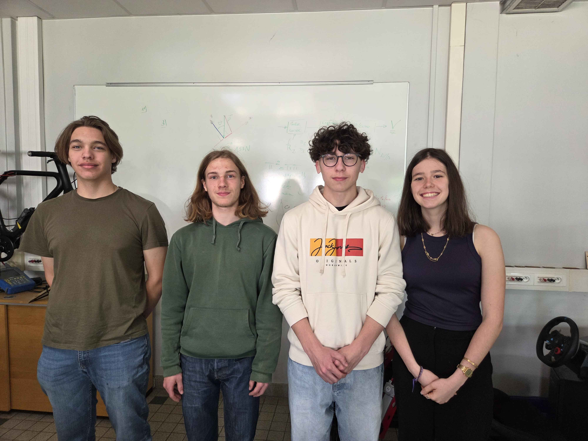

Nous sommes un groupe d’élèves de Première générale du lycée Lycée Gustave Eiffel à Dijon. Dans le cadre de notre participation aux Olympiades de Sciences de l’Ingénieur, nous avons imaginé et conçu un projet mêlant art et technologies interactives. Notre objectif est de montrer comment les sciences de l’ingénieur peuvent enrichir l’expérience culturelle en rendant les œuvres d’art plus accessibles, immersives et vivantes pour tous les publics. À travers ce projet, nous souhaitons illustrer la rencontre entre créativité artistique et innovation technologique.
Notre projet vise à créer une expérience immersive mêlant art et sciences de l’ingénieur. Grâce à un dispositif interactif équipé de capteurs, le visiteur est détecté à son arrivée puis invité à scanner un QR code. Il accède alors à un site web où il peut choisir une œuvre d’art ainsi que la langue de l’audio. Après sélection, un système de reconnaissance suit ses mouvements, permettant à un hologramme de l’œuvre de se déplacer avec lui. Ce dispositif a pour objectif de rendre la découverte artistique plus vivante, interactive et accessible, en plaçant le visiteur au cœur de l’expérience.
